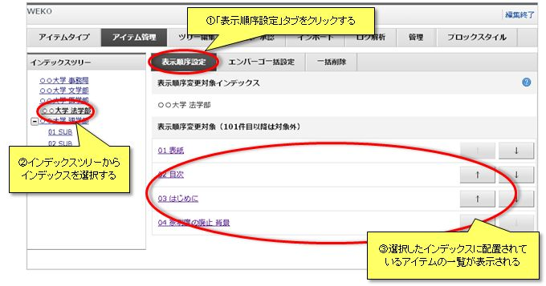
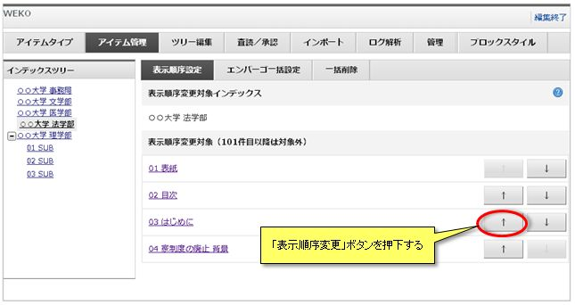
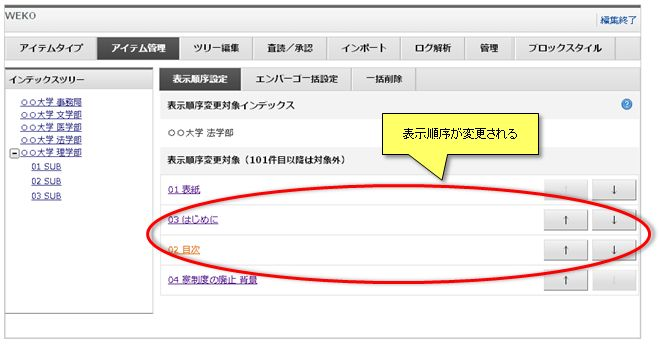
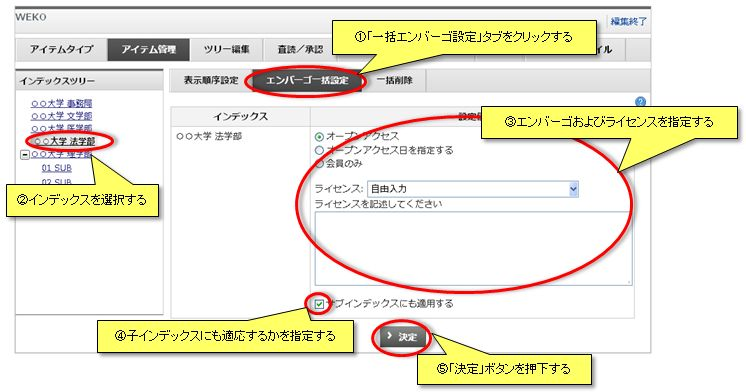

アイテム管理
アイテム管理」タブをクリックすると、アイテム管理画面が表示されます。表示順序設定
インデックスに属するアイテムの表示順序を設定することができます。
「表示順序設定」タブをクリックし、「インデックスツリー」から表示順序を設定するインデックスを選択します。
選択したインデックスの直下に配置されているアイテムの一覧が表示されます。

「↑」または「↓」ボタンをクリックすると表示順序を変更・設定することができます。


「表示順序設定」タブをクリックし、「インデックスツリー」から表示順序を設定するインデックスを選択します。
選択したインデックスの直下に配置されているアイテムの一覧が表示されます。
「↑」または「↓」ボタンをクリックすると表示順序を変更・設定することができます。
【注意】
インデックス検索時に上記のカスタム順序で表示を行うためには、ソート順序を「カスタム」に設定する必要があります。 インデックス検索時のソート条件は WEKO管理画面 > 表示設定 > 検索結果表示設定 にて設定が可能です。
こちらの変更もあわせて実施してください。
インデックス検索時に上記のカスタム順序で表示を行うためには、ソート順序を「カスタム」に設定する必要があります。 インデックス検索時のソート条件は WEKO管理画面 > 表示設定 > 検索結果表示設定 にて設定が可能です。
こちらの変更もあわせて実施してください。
一括エンバーゴ設定
インデックスに属するアイテムの「ファイル」属性にライセンスおよびエンバーゴを一括設定することができます。
「一括エンバーゴ設定」タブをクリックし、「インデックスツリー」からライセンスを一括設定するインデックスを選択します。
アイテムの「ファイル」属性に一括設定するライセンスを設定します。
ライセンスの設定についてはアイテム登録 ライセンス設定をご覧ください。
「サブインデックスにも適用する」にチェックが付いている場合、再帰的に子インデックスに所属するアイテムにもライセンスおよびエンバーゴが一括設定されます。
「決定」ボタンをクリックすると、ライセンスおよびエンバーゴの一括設定が実行されます。

「一括エンバーゴ設定」タブをクリックし、「インデックスツリー」からライセンスを一括設定するインデックスを選択します。
アイテムの「ファイル」属性に一括設定するライセンスを設定します。
ライセンスの設定についてはアイテム登録 ライセンス設定をご覧ください。
「サブインデックスにも適用する」にチェックが付いている場合、再帰的に子インデックスに所属するアイテムにもライセンスおよびエンバーゴが一括設定されます。
「決定」ボタンをクリックすると、ライセンスおよびエンバーゴの一括設定が実行されます。